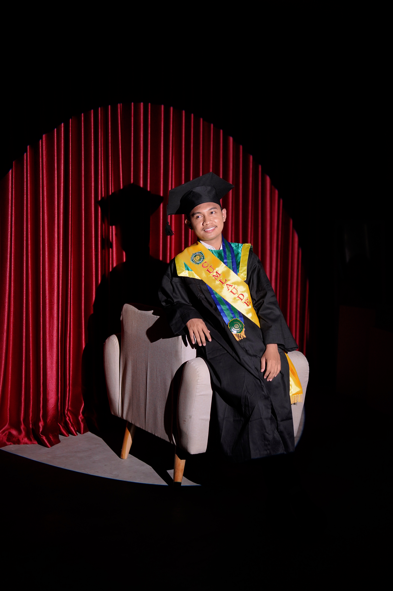

02. Initializing Profile
Saya adalah seorang Fullstack Developer sekaligus memiliki ketertarikan dan pengalaman di bidang Data Engineering, dengan kemampuan membangun aplikasi web secara end-to-end mulai dari frontend, backend, hingga pengelolaan database dan integrasi data. Berpengalaman dalam mengembangkan sistem yang efisien, scalable, dan terintegrasi untuk mendukung kebutuhan bisnis maupun pengguna.
Selain pengembangan aplikasi, saya juga memiliki kemampuan dalam pengolahan data, perancangan database, serta transformasi data menjadi informasi yang bernilai untuk mendukung pengambilan keputusan. Terbiasa bekerja dengan backend development, API integration, SQL, dan data processing dalam membangun solusi digital yang terstruktur, optimal, dan berbasis data.
Saya memiliki kemampuan adaptasi yang baik, semangat belajar yang tinggi, dan komitmen untuk terus mengembangkan keterampilan di bidang software development dan data engineering, serta berkontribusi secara kolaboratif dalam menciptakan solusi teknologi yang inovatif dan berdampak.
&
Code
03. Core Protocols
04. Solutions & Services
Web Development
Building modern, stable information systems and informative user dashboards from scratch using responsive frameworks for cross-platform usage.
Data Engineering
Executing ETL pipelines, processing raw data, and structuring robust analytics or data visualizations to observe systematic trends.
Machine Learning
Creating predictive AI models (like Random Forests & Regressions) and directly integrating them into functional systems for practical, real-world utility.
05. Project Portfolio
Richwellness.me - Yogyakarta
Sebagai programmer dalam proyek gabungan perkuliahan, saya mengembangkan fitur kunci, menulis kode berstandar, serta berkolaborasi untuk memenuhi spesifikasi. Saya juga merancang wireframe aplikasi.
Sistem Kontrol Lampu Pintar
Mengembangkan aplikasi kontrol lampu pintar menggunakan Kotlin berbasis mobile. Sistem ini memungkinkan pengaturan status lampu dari jarak jauh secara intuitif dan otomatisasi pencahayaan.
Dashboard Web PT Aino Indonesia
Merancang dan mengembangkan dashboard perusahaan berbasis web dengan visualisasi data meliputi grafik dan peta interaktif. Melakukan optimisasi kode untuk meningkatkan performa sistem.
Sistem Prediksi Permintaan Stok
Mengembangkan model Regresi Linier guna memprediksi kebutuhan stok bulanan yang ditarik dari data transaksi. Membangun antarmuka dashboard dengan kerangka kerja Django untuk presentasi data.
CCBS PT Life Media
Revitalisasi sistem Customer Care and Billing System (CCBS), mencakup pembuatan front-end hingga back-end. Bertanggung jawab terhadap finalisasi deployment server serta konfigurasi domain produksi.
Sistem Prediksi Risiko Preeklampsia
Membangun integrasi model Random Forest pada aplikasi web (Django) untuk memprediksi dini preeklampsia. Semua pengumpulan dataset klinis nyata dilakukan mandiri beserta konfigurasi online untuk aksesibilitas publik.
06. Training & Background
Universitas Aisyiyah Yogyakarta
S1 Teknologi Informasi | IPK: 3.83/4.00- Sangat andal dan disiplin tinggi dalam menuntaskan tugas akhir sesuai standar akademis.
- Tingkat ketelitian ekstra pada berbagai proyek praktikum sesuai pedoman.
- Mengerahkan dedikasi utuh secara konsisten dalam pengembangan setiap proyek kampus.
UKM Sepak Bola & Futsal UNISA
Koordinator MediaMemimpin manajemen komunikasi organisasi sekaligus manajer media utama. Bertanggung jawab dalam merancang strategi publikasi media, serta pengelolaan konten harian media sosial.
07. Certifications & Awards

Penghargaan Lulusan Berprestasi Terbaik Non Akademik

Medali Perak Lomba Web Aplikasi

Semifinalist Web Dev (Proxocoris International)

Juara 3 Lomba Video Kreatif

Sertifikasi Deep Learning

Sertifikat Magang PT Aino Indonesia

Sertifikat Praktik Kerja Lapangan (PKL)

International Youth Forum (Mercu Buana)
08. Scientific Publications
Perancangan dan Implementasi Dashboard Berbasis Web untuk Meningkatkan Transparansi dan Pengawasan Kinerja Menggunakan Metode Waterfall
Jurnal BSI (IJEC) - Publikasi penelitian mengenai optimisasi dashboard sistem pemantauan.
Sistem Prediksi Risiko Preeklamsia Menggunakan Algoritma Random Forest dengan Interpretasi SHAP
Penelitian medis yang berfokus pada Machine Learning interaktif untuk mendiagnosis risiko preeklampsia berstandar Jurnal Sinta 3.